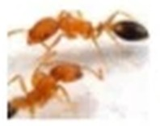
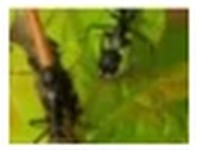
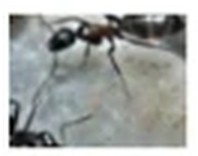
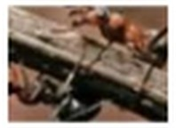

개미
| 생김새 | 크기 | 활동시기 및 서식장소 | 습성/생활 |
|---|---|---|---|
 애집개미,불개미 | 일개미 0.2cm~2.5cm 여왕개미(3.5cm) | 일년 내내 활동하며 따뜻한 곳에서 많이 서식함 | 수백 마리씩 떼로 줄지어 다니며 몸의 경절이 두 마디이며 일개미들은 한 가지 형태이다. 몸 전체의 색깔은 황색이나 적갈색이며 복부 끝부분에만 흑색을 띤다. 더듬이는 총12개이며 끝 마디가 세 부분으로 나뉘어져 있다. 애집개미는 열 생성 개미이므로 실내에서 많이 서식하며 27~30도씨의 온도와 70%의 습도에서 서식을 많이 하고 있으며 집을 만들기보다는 실내의 벽이나 천정 틈새 가구속,마루밑 등 어둡고 따뜻한 곳에서 서식하기를 좋아한다. 한 군체는 수 천마리~수 십만마리 이며 여왕개미 한 마리가 1회에 10개정도 씩의 알을 산란하여, 총400마리 이상 산란하며 성충 까지의 소요기간은 38~48일이다. |
 곰개미 | 일개미0.45~0.6cm 여왕개미(1.3cm) 수개미(1.1cm) | 3월~10월까지활동하며 집주변의 공터나 풀밭에서 많이 서식함 | 양지바른 마른 땅속에 집을 짓고 산다.깊이가 자그마치 3m에 달하며 입구는 5~6개 이상을 만들어 놓고 드나든다.주로 6~7월이 되면 짝짓기를 하기 위해 활발히 움직이며 따뜻한 곳에서 한겨울을 왕성하게 활동한다. |
 일본왕개미 | 일개미0.6~1.5cm 여왕개미(1.8cm) 수개미(1.2cm) | 3월~10월까지활동하며 집주변이나 공원 및 공터 풀밭에서 많이 서식 함 | 비교적 건조한 풀밭에 많이 서식하고 있으며 여러 가지 꽃이나 진딧물에 모이는 보통 종으로 봄에는 돌 밑, 여름에는 풀 밑 에서 서식하는데 10마리 이하인 것부터 수백 마리 이상인 것도 있다. 가을에는 나무와 뿌리 밑으로 모여들어 주변에 나무가 없으면 땅속으로 들어가고 10월경에 땅속 1.3m 에까지 관찰된 적도 있다. |
 홍가슴개미 | 준비중 | 준비중 | 5~7월에 많이 나타나며 주로 나무의 뿌리, 기둥속에서 많이 서식하며 우리나라에서는 중부이남에 많이 분포되어 있다. |
개미가 옮길 수 있는 질병
개미는 전 세계에 분포되어 있으며 기록된 현 생종은 약 5,000종으로 미 기록 까지 합하면 15,000종에 달할 것이라고 한다.한국에는 26속48종이 분포되어 있으며 한 군체당 수천~수 십만 마리가 존재하며 주변환경이 안 좋아지면 즉시 이동하며 여러 곳에서 새로운 군체를 형성하므로 살충제등의 상용은 군체를 확산시키는 역할을 할뿐이다.
개미는 계절별에 따라 식습관이 바뀌며 완벽한 군집생활을 형성한다.개미는 음식물을 오염시키며 병원균을 매개하며 특히 천식이나 알러지의 원인이 되기도 한다.
애집개미/불개미
- 크기 : 2m~2.5m / 활동시기 : 일년 내내 / 서식장소 : 따뜻한 실내
- 담황갈색이며 배의 부분은 회갈색이며 일개미, 병정개미, 여왕개미.수캐미로 구분하여 군집 생활을 하며 자신들의 흔적을 따라 움직이며 장롱이나 가구 벽 틈, 천정 사이 등에 집을 만들어 서식을 하며 기름지고 단 것을 좋아해 곤충도 잡아먹는 육식성 이기도 하다 주로 식품을 오염시키며 사람을 물기도 하여 피해를 주고 있으며 대부분 가정에서 문제가 되고 있다.
- 다벌목 개미과의 곤충으로 원래는 아프리카의 열대지방에서 서식하였으나 비행기나,배등의 교통수단으로 전세계로 분포되어있다.
- 날개가 없고 생식기능이 없이 단순히 집을 짓고 먹이를 모으는 등의 일을 맡아 하는 일개미는 크기가 2~2.5mm이며, 암컷은 2.5~3mm이다, 여러개미와 마찬가지로 암컷은 생식기능을 담당하고 일개미가 먹이를 구해오지만 때로는 암컷도 먹이를 찾아 집에서 나오기도 한다.
곰개미
- 크기: 일개미 4.5mm~6mm / 활동시기: 3~6월 / 서식장소: 집 주변 풀밭과 산지의 건조한 풀밭 등
- 벌목 개미 과의 곤충이며 몸 색깔은 검은색 또는 검은 갈색이며 다리 끝은 붉은빛을 띤 갈색 또는 검은 갈색이다
- 몸 전체에 광택이 나며 연한 회갈색 털이 촘촘하게 나 있다. 군데군데 뻣뻣한 털도 나 있으며 머리는 달걀모양에 머리방패의 앞 슭이 밖으로 튀어나와 있으며 암컷과 수컷의 몸 빛깔은 검은색이고 연한 털이 촘촘이 나 있다. 암컷의 날개는 투명하고, 수컷의 다리와 배 끝은 회갈색을 띠고 있다. 무엇이든 많이 먹기 때문에 힘이 세어 먹이를 잘 나른다.
- 양지바른 땅속에 집을 짓고 사는데 그 깊이가 자그마치 3m에 달하며, 입구는 5개 이상을 만들어 놓고 드나든다. 주로 6~7월이 되면 짝짓기를 위해 활발히 활동하며 따뜻한 땅속에서는 한겨울에도 왕성하게 활동한다. 우리나라를 비롯 일본, 중국, 몽골 등 아시아 등지에서는 물론 유럽이나 북아메리카 뿐만 아니라 아프리카 등지 에서도 널리 분포되어 있다.
일본왕개미
- 크기: 일개미 6mm~15mm, 여왕개미 : 18m, 수개미: 12m, / 활동시기: 3~6월 / 서식장소: 집 주변 풀밭과 산지의 건조한 풀밭 등
- 여왕개미의 몸은 흑색이고 미세한 털이 나있으며 가슴과 배는 머리보다 조밀하게 되어있다.
- 갈색의 센털도 나있으며 가슴의 등 면과 배 끝에는 비교적 많은 편이다. 머리는 타원형이며 큰 개체에서는 뒷머리의 양 옆에 모가 졌으며 뒤 가두리와 옆 가두리는 거의 직선에 가깝다.턱은 흑색이고 점각과 함께 주로 세로 주름들이 가부의 이가 나있는 쪽에 있다.홑눈은 없으며 머리방패는 흑색미각, 미세한 점각이 다량 분포하고 가운데가 약간 융기 되었으나 거의 평탄한 편이다. 머리 방패의 앞 가두리는 두텁고 다소 일직선에 가깝게 잘리어 나간 듯 하며 중앙에는 예리한 황색의 길고 곧은 털이 서너 개나 있고 가장자리에는 없다.
- 배 자루는 비늘조각 모양이며 위쪽 언저리는 다소 둔하다. 큰 개체는 작은 개체보다 머리와 가슴이 잘 발달되었으며 여왕개미의 경우 가슴이 잘 발달 되어 있다. 날개는 갈색이며 날개 맥도 갈색이다. 수개미는 몸이 좁고 길며 머리는 둥글고 홑눈과 곁눈이 크다.
홍가슴개미
- 크기: 일개미 8mm~12mm, 암컷16mm / 서식장소: 나무의 기둥이나 뿌리 속 / 분포지역: 한국,일본
- 벌목 개미 과에 딸린 곤충이며 몸 빛깔은 검은색을 띈다.
- 가슴, 배 자루, 제1배 마디 아랫 부분은 어두운 적색이며 몸에는 갈색의 잔털이 나있으며 긴 센털도 조금씩 나있다. 암컷은 가슴과 배의 아랫 부분이 어두운 적색이며 날개는 엷은 갈색이며 반투명하다.
- 날개 맥은 짙은 색 이며 수컷은 검은색을 띄며 날 개미는 5~7월에 많이 나타나며 주로 나무의 뿌리, 기둥속에서 많이 서식하며 우리나라에서는 중부이남에 많이 분포되어 있다